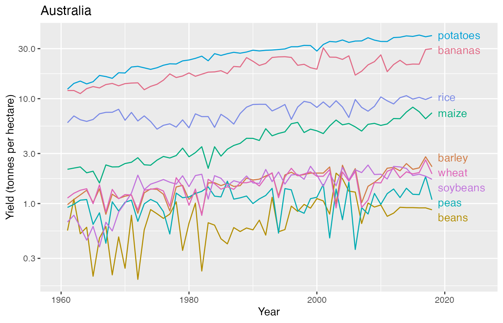
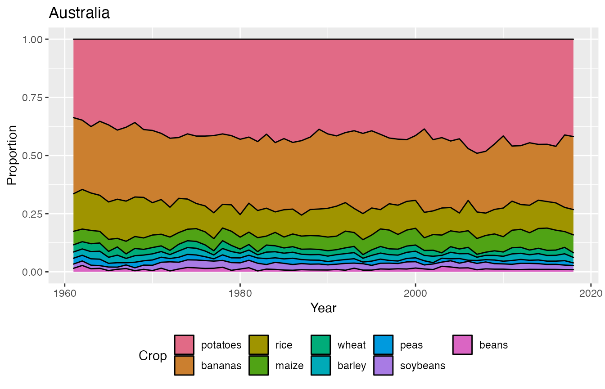

Our World in Data: Key Crop Yields
crops.RmdThis dataset contains the agricultural yields across crop types and by entity (e.g. country and region) from 1960 to 2018.
The data can be accessed by loading the cwdata and
calling on the object key_crop_yields, or alternatively
using cwdata::key_crop_yields.
library(dplyr)
library(colorspace)
library(ggplot2)
library(ggrepel)
library(cwdata)
key_crop_yields
#> # A tibble: 143,825 × 5
#> entity code year crop yield
#> <chr> <chr> <dbl> <chr> <dbl>
#> 1 Afghanistan AFG 1961 wheat 1.02
#> 2 Afghanistan AFG 1961 rice 1.52
#> 3 Afghanistan AFG 1961 maize 1.4
#> 4 Afghanistan AFG 1961 soybeans NA
#> 5 Afghanistan AFG 1961 potatoes 8.67
#> 6 Afghanistan AFG 1961 beans NA
#> 7 Afghanistan AFG 1961 peas NA
#> 8 Afghanistan AFG 1961 cassava NA
#> 9 Afghanistan AFG 1961 barley 1.08
#> 10 Afghanistan AFG 1961 cocoa NA
#> # … with 143,815 more rows
#> # ℹ Use `print(n = ...)` to see more rowsBelow we compute a line plot that shows the distribution of the yield by crop type in Australia from 1960 to 2018.
aus_crops <- key_crop_yields %>%
filter(entity=="Australia")
aus_crops %>%
ggplot(aes(year, yield, color = crop)) +
geom_line() +
geom_text_repel(data = ~ .x %>%
group_by(crop) %>%
filter(year == max(year)),
aes(label = crop),
nudge_x = 1.5,
hjust = 0,
min.segment.length = Inf,
direction = "y") +
scale_color_discrete_qualitative() +
guides(color = "none") +
scale_y_log10() +
scale_x_continuous(limits = c(1960, 2025)) +
labs(x = "Year",
y = "Yield (tonnes per hectare)",
title = "Australia")
Alternatively we compute a proportional stacked area chart as below. This makes it to see that Australia proportionally produces a lot of potato and bananas with this trend largely continuing over time.
aus_crops %>%
group_by(year) %>%
mutate(perc = stack_normalise(yield),
crop = reorder(crop, -perc)) %>%
ggplot(aes(year, perc, fill = crop)) +
geom_area(color = "black") +
scale_fill_discrete_qualitative() +
theme(legend.position = "bottom") +
labs(x = "Year",
y = "Proportion",
fill = "Crop",
title = "Australia")